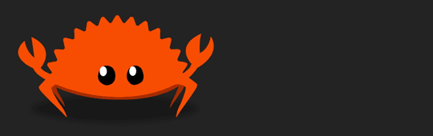

Are we in space yet?
A catalogue of crates
in the Rust ecosystem for (aero)space.
but the exosphere isn't very safe yet.
Why (Aero)space? Lately the (Aero)space industry is picking up speed in comercialization with faster and rapid development,
which is why we have created the AeroRust working group. This Working group is aiming to help push
the Open-source community more into the growing (Aero)space industry, by providing information, materials, tools,
crates etc. to hobyists and the industry.
Of course! we are aiming to grow the
Rust programming language community by this effort and set it as a leading technology in the area.
Why Rust? The Rust programming language is empowering everyone to build reliable and efficient software. The language
is quite new, but it is already changing a lot of industries. Rust has many compelling features and benefits over
other languages, nonetheless, it might not be the only language you need to choose for use.
You can check out what project we are currently building in Github github.com/AeroRust
and join the Community on the AeroRust's Discord server.
Rust (Aero)space Ecosystem
Additional resources
Suggest additional resources for getting started with (Aero)space in Rust
